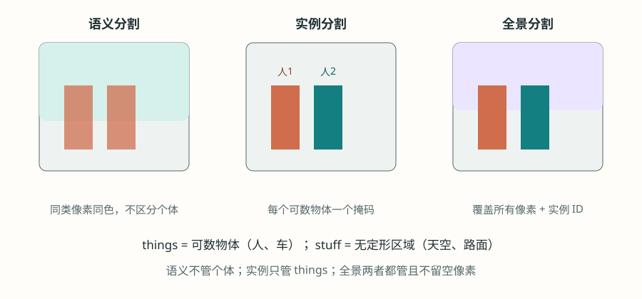
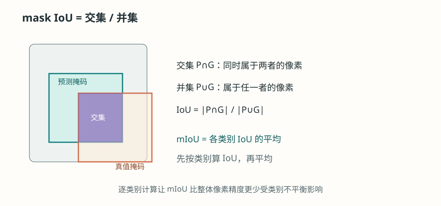
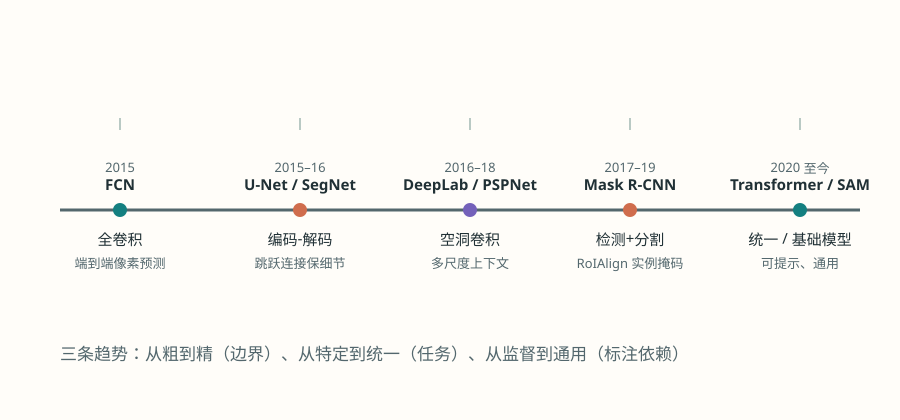

CHAPTER 19 · IMAGE SEGMENTATION
图像分割基础：从框到每一个像素
检测只给出矩形框，框内仍混入背景。分割要回答“每个像素属于哪个类别”，并区分语义、实例与全景三种任务。理解它们的输出定义与评价指标，是读懂 U-Net、Mask R-CNN 等模型的前提。
分割是逐像素分类，而不是画框
目标检测输出的是物体周围的矩形框。但框会包含大量不属于物体的背景像素，也拿不到物体的精确形状、轮廓和面积。当任务需要精细的空间理解时，矩形框就不够用：自动驾驶需要区分路面、路沿与障碍物；医学影像需要圈出胿瘤的轮廓；图像编辑需要“只把这个人抠出来”。
图像分割（image segmentation）把这些需求统一为逐像素分类：对图像中每个像素分配一个类别标签，输出一张与输入同尺寸的标签图（H×W，或 H×W×1 的类别索引）。相对检测的 (框, 类别)，分割的输出是密集的像素级预测，因此天然保留形状与边界信息，也对分辨率与评价口径更敏感。

语义、实例、全景分割三者的边界
假设图中有三个人、两辆车和一条狗，三种任务的输出完全不同：
| 任务 | 英文 | 每个像素得到什么 | 区分个体 | 覆盖“无定形”区域 |
|---|---|---|---|---|
| 语义分割 | semantic segmentation | 一个类别标签 | 否（三个人都标为“人”） | 是（天空/路面也可作为类别） |
| 实例分割 | instance segmentation | 每个物体实例一个掩码 | 是（人1、人2、人3） | 通常只处理可数物体 |
| 全景分割 | panoptic segmentation | 类别 + 实例 ID | 是（仅对可数物体） | 是（覆盖所有像素） |
这里的关键区分是 things 与 stuff：things 是可数的物体（人、车、动物），有明确边界和数量；stuff 是无定形的区域（天空、草地、路面），只有类别、没有“第几个”的概念。语义分割不区分个体，实例分割通常只管 things，全景分割（FAIR，2018）则把两者统一：给每个像素一个语义标签，并对 things 再附上实例 ID，力求不留下未分类的像素。
三种任务的输出定义不同，因此评价指标不可直接互相比较：语义分割常用 mIoU；实例分割用 COCO mask AP；全景分割用 PQ（panoptic quality）。看到“分割精度”时，必须先问是哪个任务、哪个指标。
mask IoU、mIoU 与 Dice
分割最核心的度量是掩码交并比（mask IoU）：预测掩码与标注掩码的交集面积除以并集面积，定义与检测的框 IoU 形式上一致，只是对象从矩形换成了像素集合。
mask IoU 用像素计数代替面积；mIoU 先按类别算 IoU 再平均，因此比整体像素精度更少受类别不平衡影响。

像素精度（pixel accuracy, PA）看似直观：正确像素数除以总像素数。但它在类别极不平衡时严重误导——若背景占 95%，模型全部预测背景就能拿到 95% PA。因此 PA 常与 mIoU 并列报告，但选型时看 mIoU。
Dice 系数是 IoU 的“平滑版”，常用于类别高度不平衡的医学分割，可写成两个集合的关系：
Dice 与 IoU 单调对应：IoU=1 时 Dice=1，IoU=0 时 Dice=0。它是 Dice Loss = 1 − Dice 的基础。
口径陷阱。mIoU 的数值依赖两个往往不写明的约定：是否包含背景类；某类在图中完全未出现时，它的 IoU 计 0 还是忽略。这两点会让同一个模型在不同实现下相差数个百分点，跨论文比较前必须先对齐口径。
def mask_iou(pred, gt):
# pred, gt 为等长的一维像素标签序列（1=前景, 0=背景）
assert len(pred) == len(gt)
inter = sum(1 for p, g in zip(pred, gt) if p == 1 and g == 1)
union = sum(1 for p, g in zip(pred, gt) if p == 1 or g == 1)
if union == 0:
return 1.0 # 预测与真值都为空：按约定返回 1.0，需在评估中显式说明
return inter / union
def dice(pred, gt):
iou = mask_iou(pred, gt)
return 2 * iou / (1 + iou)
pred = [1, 1, 1, 0, 0, 0, 0, 0]
gt = [1, 1, 0, 0, 0, 0, 0, 0]
assert abs(mask_iou(pred, gt) - 2/3) < 1e-9
assert abs(dice(pred, gt) - 0.8) < 1e-9
# 全背景预测在 PA 下看似完美，但在前景类上 IoU 为 0
bg_pred = [0] * 8
print("IoU:", round(mask_iou(pred, gt), 4), "Dice:", round(dice(pred, gt), 4), "fg IoU of all-bg:", mask_iou(bg_pred, gt))分割数据集与评估口径
数据集的选择直接决定了任务定义与评价口径。下面是几个常见基准，规模数字为大致数量级，引用时应以各自官方页面为准。
| 数据集 | 主要任务 | 规模（约） | 类别 | 特点 |
|---|---|---|---|---|
| PASCAL VOC 2012 | 语义分割 | 数千张 | 21（含背景） | 最早的标准化分割基准之一 |
| MS COCO | 实例 / 全景分割 | 数十万张 | 80（things） | 实例分割的主流基准，报告 mask AP |
| Cityscapes | 语义 / 实例分割 | 5000 精标 + 20000 粗标 | 30（19 用于评估） | 街景、高分辨率、像素级精细标注 |
| ADE20K | 语义 / 全景分割 | 约两万七千张 | 150（things+stuff） | 场景多样、密集标注、细粒度 |
| BDD100K | 语义分割 | 约十万张 | 数十类 | 自动驾驶、天气与光照多样 |
口径提醒：COCO 实例分割报告的是 mask AP（与检测的 bbox AP 是两套指标）；Cityscapes 的 30 类中只有 19 类参与 mIoU 评估，其余被忽略或视为 void。把不同基准的数值直接并列比较，会得到错误结论。此外，评估时通常需将预测上采样回原始分辨率再算指标，否则高分辨率小物体上的差异会被抹平。
贯穿所有方法的五个难点
- 边界模糊：物体边界往往不清晰（橘猫趴在橙色地毯上），像素级标注本身就带主观差异，这也是高质量分割标注昂贵的原因。
- 小物体：小目标在下采样后信息几乎消失。据 COCO 的统计口径，面积很小的物体在标注实例中占比很高（具体比例以官方分析为准），这促使 U-Net 类方法用跳跃连接保留高分辨率细节。
- 类别不平衡：大面积背景像素远多于小目标，模型倾向于“忽略”小物体与罕见类。常用对策是加权交叉熵、Dice Loss，以及从检测借来的 Focal Loss。
- 尺度多样：同一类物体在不同图里可能占据半幅图或只有几十像素，对感受野与多尺度设计提出要求。
- 遮挡与截断：物体相互遮挡是常态，模型需要上下文“脑补”被遮挡部分，这与检测同源但要求更精细的空间推理。
这五个难点不是各自的孤立问题，它们共同解释了分割模型为何普遍采用编码-解码与多尺度结构：既要深层的语义，又要浅层的高分辨率细节。
从 FCN 到 SAM 的发展脉络

分割模型大致经历了五代演变，看清脉络比背单个模型更有用：
- FCN（2015）：第一个全卷积、端到端的像素级预测网络，用转置卷积上采样并融合浅层特征，取代了滑窗式的 patch 分类，是后续所有工作的基石。
- 编码-解码（2015–2016）：U-Net、SegNet 把 FCN 发展为对称结构，编码器提语义、解码器恢复分辨率，跳跃连接把细节拼回来。该设计在医学分割中尤其成功。
- 空洞卷积与多尺度（2016–2018）：DeepLab 系列用空洞卷积与 ASPP 在不增加参数的情况下扩大感受野；PSPNet 用金字塔池化聚合多尺度上下文。
- 检测+分割统一（2017–2019）：Mask R-CNN 用 RoIAlign 把 Faster R-CNN 扩展为实例分割的事实标准；YOLACT、SOLO 等单阶段实例分割则在速度上突破。
- Transformer 与基础模型（2020 至今）：SETR、SegFormer 引入 Transformer 编码器；MaskFormer/Mask2Former 统一了语义/实例/全景分割；SAM（Segment Anything）把分割推向可提示的通用模型。
三条趋势贯穿始终：从粗到精（边界质量提升）、从特定到统一（不同任务被同一架构覆盖）、从监督到通用（从依赖大量标注到支持提示式、zero-shot 泛化）。
检查理解：为什么像素精度（PA）单独看会误导？
当背景类占绝大多数像素时，模型只要全部预测背景就能得到很高的 PA，但在前景类上的 IoU 为 0。mIoU 先按类别计算再平均，能暴露这种“只预测多数类”的退化。
原始资料与评估口径
本页的任务定义、指标公式与脉络叙述依据下列原始论文与官方基准页面；数据集规模为大致数量级，引用前应以官方为准。